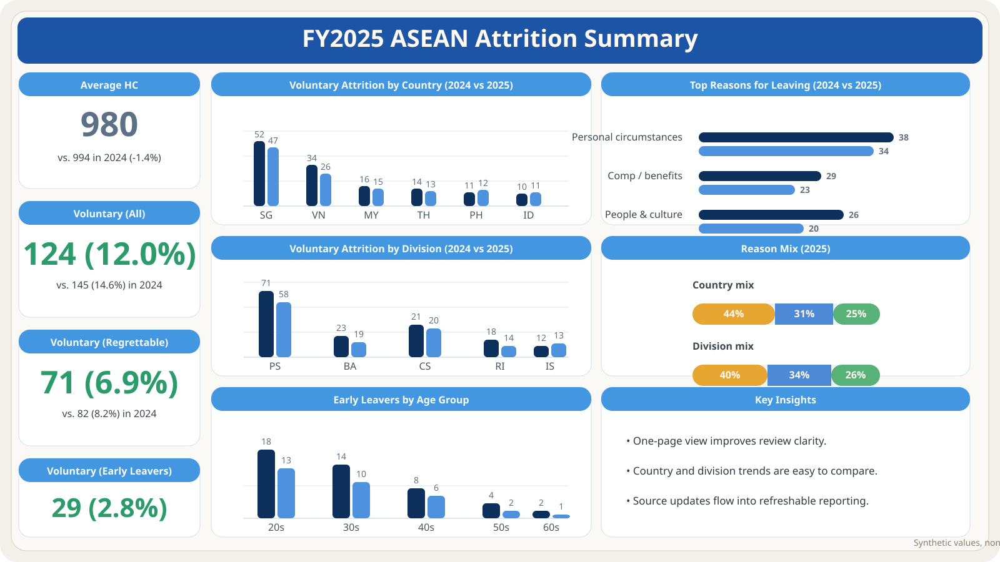

ASEAN Workforce Analytics Automation
6 countries, 5 divisions
Power BI + Advanced Excel
30+ analytics requests
Built a Head of HR dashboard and supporting Advanced Excel recruitment trackers across 6 countries and 5 divisions, cutting reporting from hours to minutes and giving leadership a clearer monthly read on workforce trends.